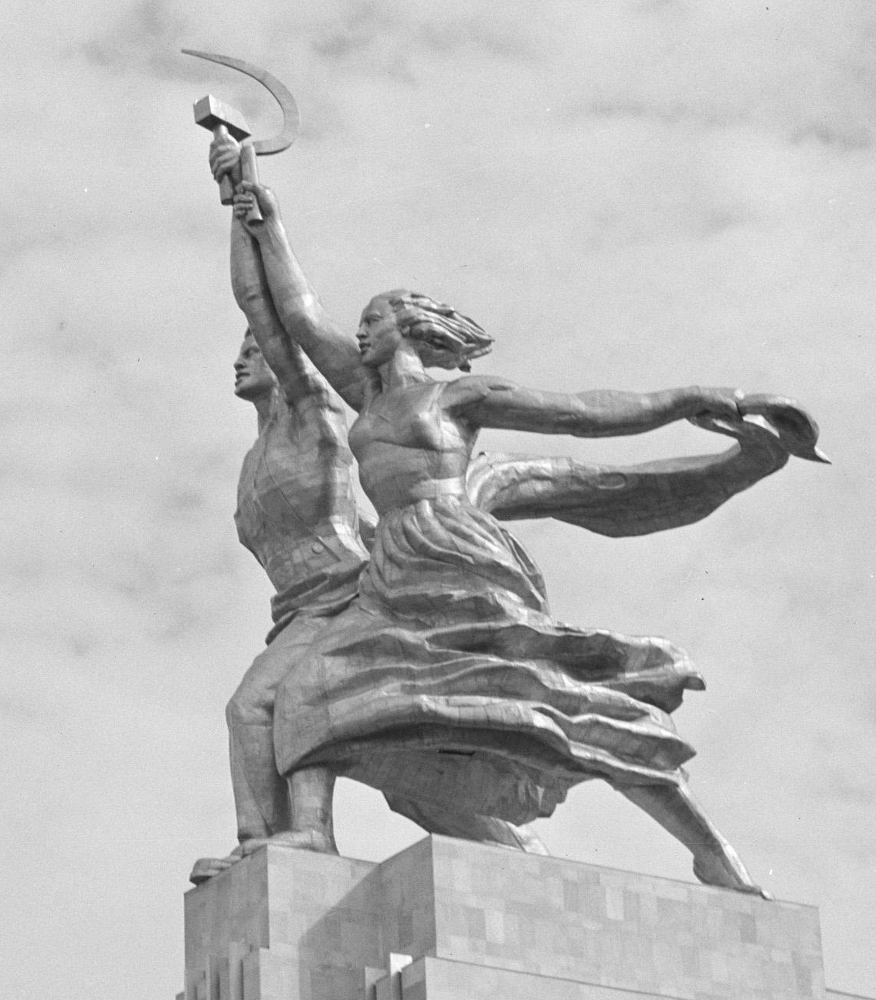

Monuments
Bronze Horseman (an example of imperial art) (1782) in St. Petersburg
commissioned by Catherine the Great.

Worker and Collective Farm Woman (an example of socialist art) (1937) in Moscow
author Vera Mukhina.
Worker and Collective Farm Woman commisioned for the Soviet pavilion in Paris
The Soviet pavilion opposite
the Nazi Pavilion of an eagle and the swastika at the 1937 World’s Fair in Paris.